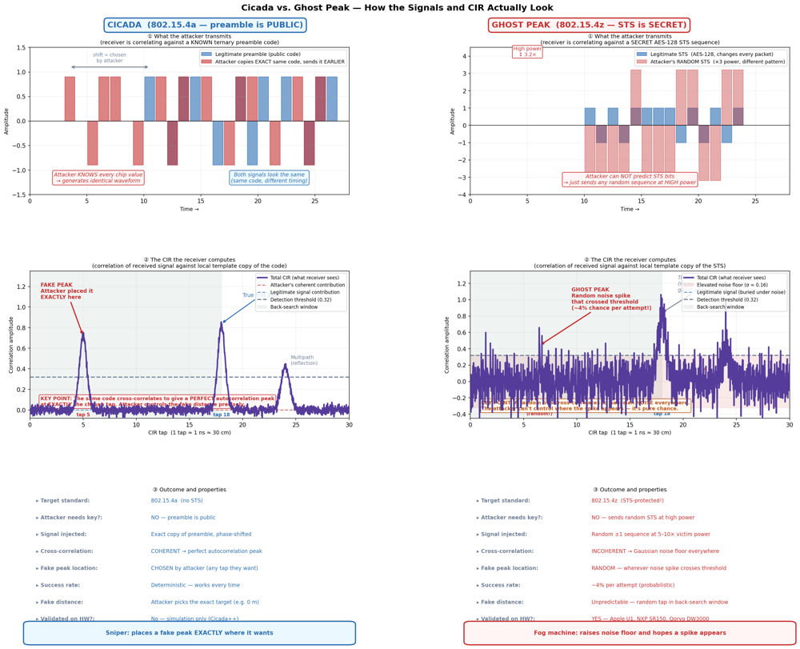

UWB Ranging Security Research COSIC
imec-COSIC, KU Leuven, Belgium · Jun 2026 – Present
Physical-layer security research on Ultra-Wideband ranging. Built SS/DS-TWR and STS-secured (IEEE 802.15.4z) ranging firmware from scratch on the Qorvo DWM3001CDK in Zephyr — antenna-delay calibration, delayed-TX scheduling, CIA timestamp gating. Reproduced and bench-verified real-hardware attacks — Cicada pulse-train, Ghost Peak distance reduction (~5 m against an STS-secured link), and UWBAD selective/flood jamming — against Qorvo CLI firmware and the Apple NI iPhone link. Reverse-engineered live FiRa and Apple NI traffic from passive captures and built a FAST attack-success pipeline with Clopper–Pearson intervals.
UWB
DW3000
Zephyr RTOS
802.15.4z
RF Security